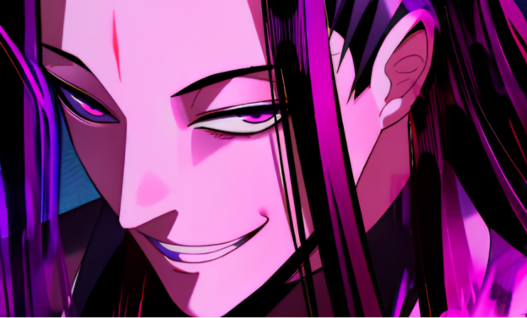
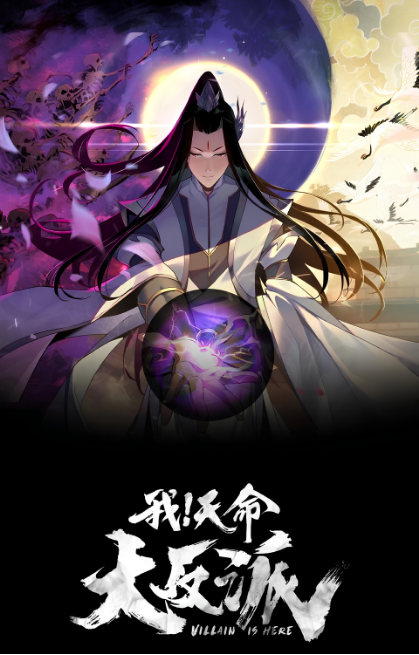

Không phải nam chính chính nghĩa, cũng chẳng phải kiểu anh hùng luôn cứu thế giới, Gu Changge của I Am the Fated Villain chọn con đường trở thành phản diện theo cách của riêng mình. Nhưng càng nguy hiểm, càng khó đoán, nhân vật này lại càng khiến người đọc tò mò. Vậy điều gì khiến một kẻ phản diện có thể chiếm trọn spotlight và biến mỗi màn đấu trí thành cuộc chơi “đoán xem ai mới là người giăng bẫy”?
Khi phản diện không còn là nhân vật phụ
Trong nhiều câu chuyện fantasy, phản diện thường xuất hiện để tạo thử thách cho nhân vật chính. Nhưng với I Am the Fated Villain, cán cân ấy bị đảo ngược: Gu Changge mới là người nắm vị trí trung tâm, còn những nhân vật được xem là “con cưng của số phận” lại trở thành đối thủ của anh.
Theo phần giới thiệu trên nền tảng Tappytoon, Gu Changge bị cuốn vào một thế giới võ thuật, nơi anh sở hữu hệ thống cho phép hấp thụ vận may và năng lực của những người mình đánh bại. Thay vì đi theo con đường anh hùng quen thuộc, anh tận dụng lợi thế của bản thân để từng bước đạt được mục tiêu.
Điểm thú vị nằm ở chỗ độc giả không chỉ theo dõi xem nhân vật chính có thắng hay không. Câu hỏi hấp dẫn hơn là: Anh ta sẽ dùng cách nào để thắng, và ai sẽ là người nhận ra mình đang bị dắt mũi?

Hint số 1: Đừng chỉ nhìn vào sức mạnh, hãy nhìn cách nhân vật tính toán
Một nhân vật mạnh có thể tạo ra những trận chiến mãn nhãn, nhưng một nhân vật vừa mạnh vừa biết tính toán lại mở ra nhiều khả năng bất ngờ hơn.
Với Gu Changge, sức mạnh không phải yếu tố duy nhất tạo nên sức hút. Cách anh khai thác lợi thế, đọc tình thế và đối phó với những người xung quanh mới là phần khiến độc giả muốn theo dõi tiếp. Khi một cuộc đối đầu bắt đầu, người đọc không chỉ chờ xem ai tung đòn cuối cùng mà còn cố đoán xem liệu những gì đang diễn ra có nằm trong kế hoạch của nhân vật hay không.
Đây cũng là kiểu truyện rất hợp để cộng đồng cùng “đào hint”: một hành động tưởng như bình thường có thể là nước cờ đã được tính trước, còn một nhân vật tự tin vào vận may của mình chưa chắc đã hiểu hết tình thế.
Tất nhiên, không phải tình tiết nào cũng là dấu hiệu của một âm mưu lớn. Nhưng chính khoảng trống giữa những gì độc giả biết và những gì nhân vật đang che giấu tạo nên đất diễn cho các giả thuyết.
Hint số 2: Nếu ai cũng tin mình là nhân vật chính thì sao?
Một trong những ý tưởng đáng chú ý của I Am the Fated Villain là sự đối đầu giữa Gu Changge và những người được xem như “người được số phận lựa chọn”.
Thông thường, độc giả đã quen với mô-típ nhân vật chính gặp cơ duyên, vượt qua thử thách rồi ngày càng mạnh lên. Nhưng khi câu chuyện được kể từ góc nhìn của một phản diện, mô-típ ấy có thể trở thành thứ để nhân vật chính lợi dụng.
Vậy nếu một người tin rằng mình được định sẵn để chiến thắng, liệu niềm tin đó có khiến họ chủ quan? Và nếu một kẻ bị gắn nhãn phản diện hiểu rõ quy luật của thế giới hơn những người được ưu ái, ai mới thật sự kiểm soát cuộc chơi?
Đây là câu hỏi khiến tác phẩm có thể được bàn luận vượt ra ngoài những màn tăng sức mạnh đơn thuần. Độc giả có thể tranh luận về vận may, năng lực cá nhân và việc số phận có thực sự quyết định kết cục hay không.

Hint số 3: Gu Changge là phản diện, phản anh hùng hay đơn giản là người chơi hiểu luật?
Điều khiến Gu Changge dễ tạo ra những luồng ý kiến trái chiều là anh không nhất thiết phải trở thành một người tốt để được xem là nhân vật trung tâm. Mục tiêu của anh và cách anh đạt được mục tiêu ấy có thể khiến độc giả vừa thích thú, vừa dè chừng.
Nếu gọi anh là phản diện, chúng ta đang nhìn từ góc độ đạo đức của hành động. Nếu gọi anh là phản anh hùng, chúng ta lại chú ý đến vị trí trung tâm của nhân vật và cách câu chuyện được kể. Hai cách gọi này không hoàn toàn giống nhau, và chính sự khác biệt ấy tạo ra chủ đề đáng bàn.
Một nhân vật có sức hút không nhất thiết phải khiến tất cả độc giả đồng tình. Đôi khi, họ chỉ cần đủ thông minh, đủ khó đoán và đủ sức đẩy câu chuyện vào những tình huống mà người đọc không thể dễ dàng đoán trước.
Vì thế, câu hỏi thú vị không chỉ là “Gu Changge có phải người tốt không?” mà còn là: Nếu bạn biết rõ nhân vật chính không phải hình mẫu chính nghĩa, bạn vẫn muốn tiếp tục theo dõi hành trình của anh ấy chứ?